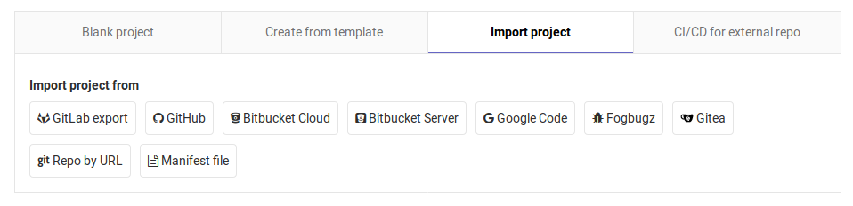

GitLab is a place to host your public and private code repositories. For everything I need in managing small side projects, it's nearly identical to GitHub but with a fox instead of a cat-octopus hybrid for a mascot. If you want a one-stop shop for enterprise-scale project management, GitLab has a pretty comprehensive set of features for that too with a new set of features rolling out each month on the 22nd. One area where GitLab soundly beats GitHub is in the flexibility of importing and exporting projects.
The process for signing up and creating a project (what GitHub calls a repository) is pretty self explanatory. If you decide to migrate a repository from your GitHub account to GitLab, there are just a few steps to take.
-
